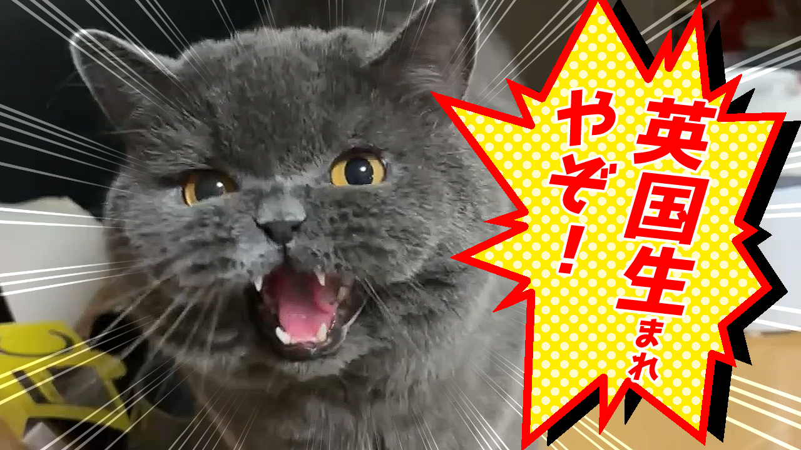

まさし川みつを教授はまさし。
まさしは雅春。
自我を持った特別なブリティッシュショートヘア。
グレモフの魅力
グレモフに包まれた雅春は丸く、まるで動くぬいぐるみのよう。
食のこだわり
喜びはごはん。まるで狩りを楽しむかのように、乾燥したササミを堪能する。
目を離した隙きに生卵ぺろぺろ。ｍ
愛すべき習慣
水を飲んだあとは、たいていアゴに水滴がついている。お気に入りは虹色の紐。
特技：ふみふみアラーム
飼い主の顔面を肉球でなで起こす、至福のモーニングルーティン。
身体の秘密
ササミを食べすぎて、まるで一本○ソのようなリバース。
実は足なが。もふもふに隠れているだけで、意外とスタイルが良い。ただし、めっちゃ毛は抜ける。